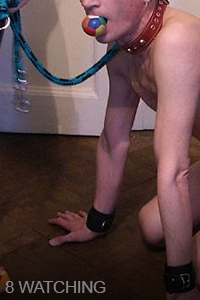
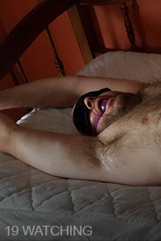
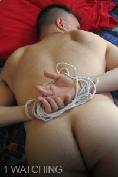
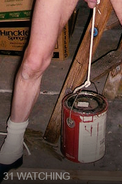
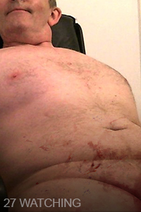
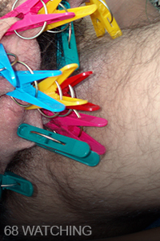
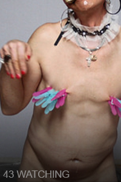
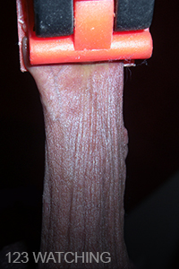

Okaleczanie to jedyna usługa transmisji na żywo z okaleczaniem genitaliów i przemocą w deep webie! Streamerzy i widzowie mogą wybierać spośród wielu różnych opcji transmisji:
transmisja jeden na jednego pozwala tylko jednej osobie na wejście do strumienia na raz, co zapewnia bardziej intymne doświadczenie dla streamera i widza.
Transmisja grupowa pozwala wielu osobom oglądać i cieszyć się jednocześnie.
Transmisja "drapanie po plecach" to czat wideo jeden na jednego, podczas którego możecie nawzajem dokonywać na sobie okaleczeń. (Ten tryb można ustawić jako prywatny lub publiczny, aby inni mogli oglądać waszą interakcję.)
Dołącz już dziś, aby zacząć oglądać lub dzielić się swoją przyjemnością z innymi!
Korzystanie z naszych usług może kosztować, ale teraz możesz odzyskać część pieniędzy, a może nawet osiągnąć zysk! Przedstawiamy "kawałki"!
Może nie zrobisz czegoś wyjątkowego, dopóki nie dadzą ci "kawałka" ;) a może po prostu uwielbiają to, co robisz! Tak czy inaczej, widzowie mogą pokazać, jak bardzo doceniają ból, który przeżywasz dla ich przyjemności.
Okaleczanie pobierze 70% opłaty za "kawałki", a 30% trafi bezpośrednio do streamera!







